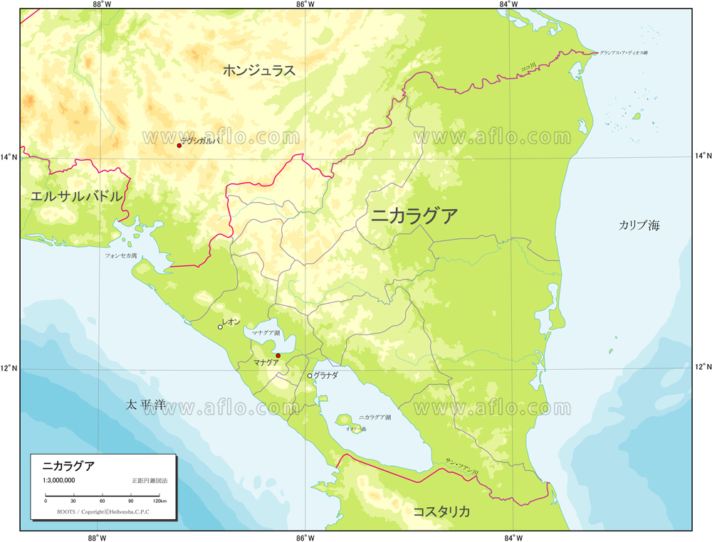
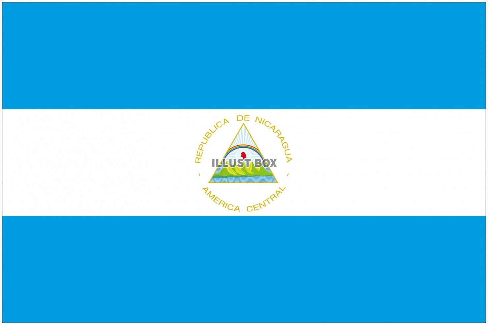
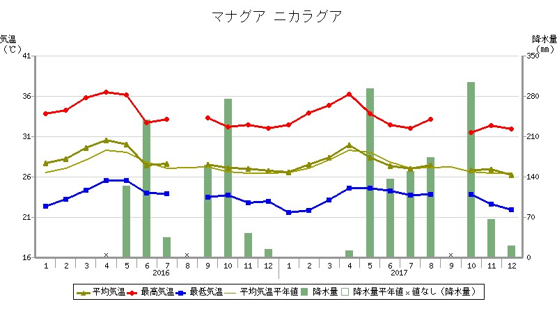
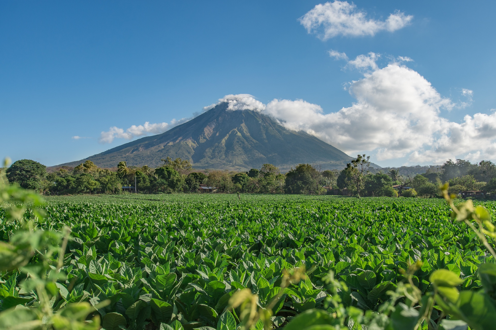
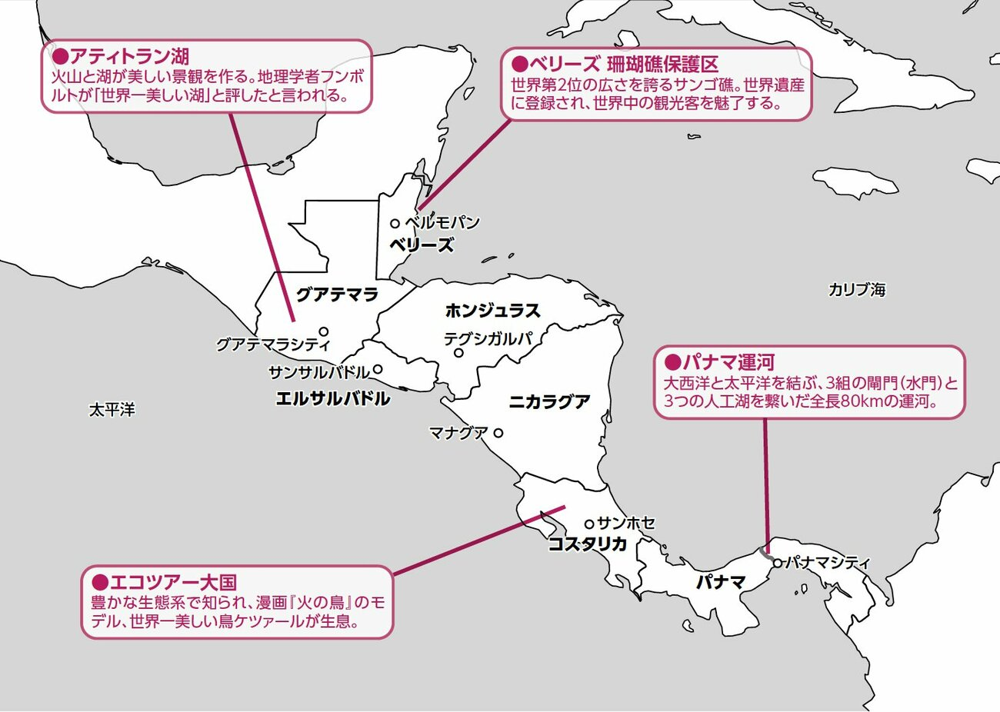
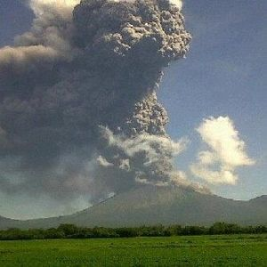
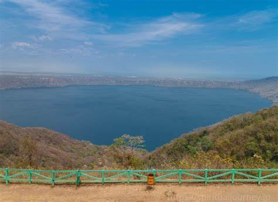
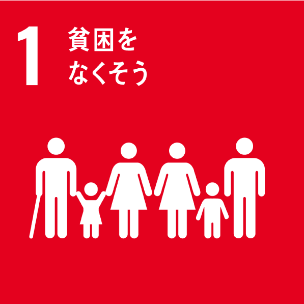
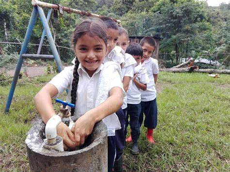

ニカラグア
1.位置や分布
中米（中央アメリカ）に位置する国で,隣国では北にホンジュラス、南にコスタリカと接しています。面積は約13万平方キロメートルでこれは日本の約1.5倍に相当します。


2.場所（地形、気候）
西部には太平洋が広がり火山帯があって雨季が5月から10月で乾季は11月から4月、中央部は高原地帯で山々が連なる、東部にカリブ海に面しており年間を通して降水量が多く湿度が高いため低地に熱帯雨林がある。

3.人間と自然環境との相互依存関係
ニカラグア湖や川は、農業や飲料水の重要な水源で熱帯雨林や火山土壌が肥沃で、コーヒー、バナナ、トウモロコシなどの農作物が生産されます。森林や鉱鉱資源は、木材や鉱物の供給源となり、経済活動に貢献しています。そして、自然の美しさと多様性を生かした観光業が経済に貢献していますが、観光活動が自然環境に対する保護意識を高める役割も果たしています。


4.空間的相互依存作用
ニカラグアはホンジュラスとコスタリカと深く相互依存しています。経済的な関係から環境保護まで、様々な面で相互に影響を与え合っています。協力と調整が重要であり、地域の安定と発展には両国間の連携が欠かせない関係となっています。

5.地域
ニカラグアは火山帯に位置しており、多くの活火山があります（例: サン・クリストバル火山）。火山による肥沃な土壌が農業に適していますが、同時に火山活動による自然災害のリスクも伴っている
ニカラグア湖は中米で最大の湖で、国の中心部に広がっています。湖の大きさとその重要性はニカラグア独自の特徴です。


6.SDGs
SDGs1:貧困をなくそう
理由は貧困の削減は他の多くのSDGsの達成に直接的な影響を与えると考えたからです。
この目標を達成できれば教育、健康、経済を成長させ水や衛星へのアクセスなど他の目標を達成しやすくなるため、この目標の達成はニカラグアにおいて発展していく上で最も優先すべき課題であると考えました。

